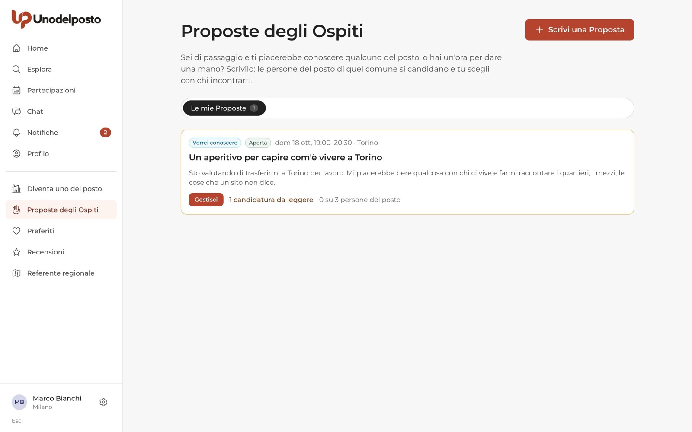
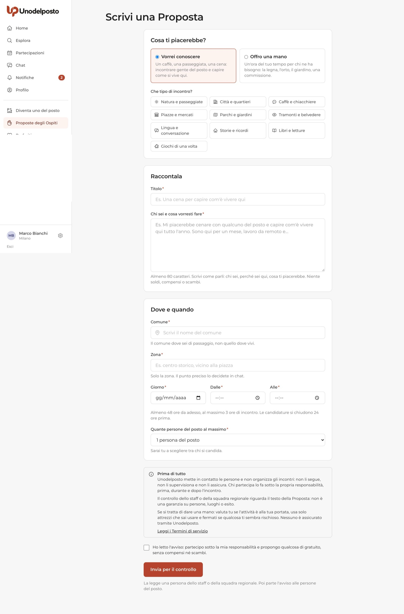
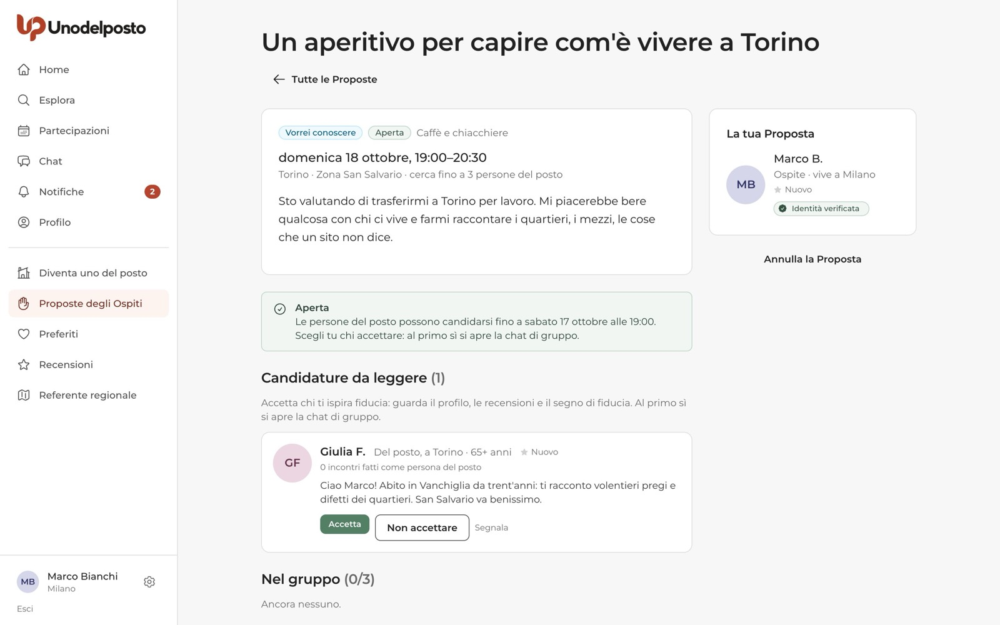
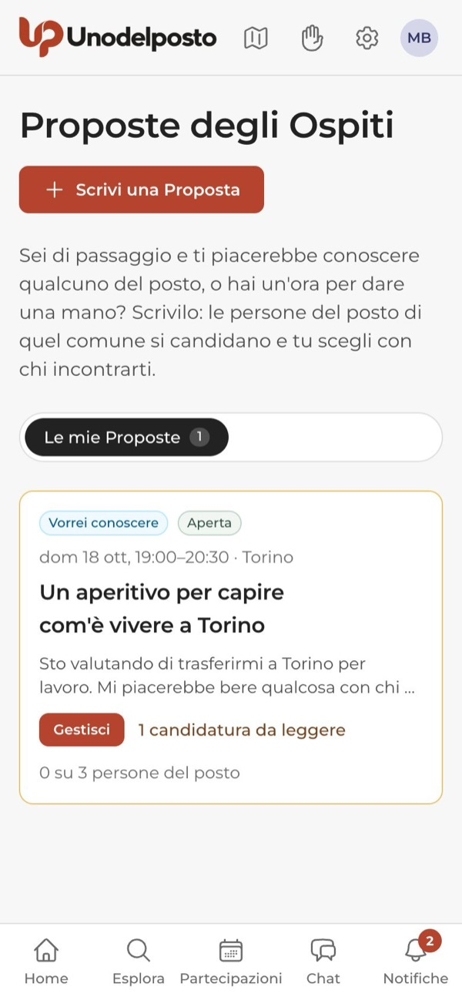
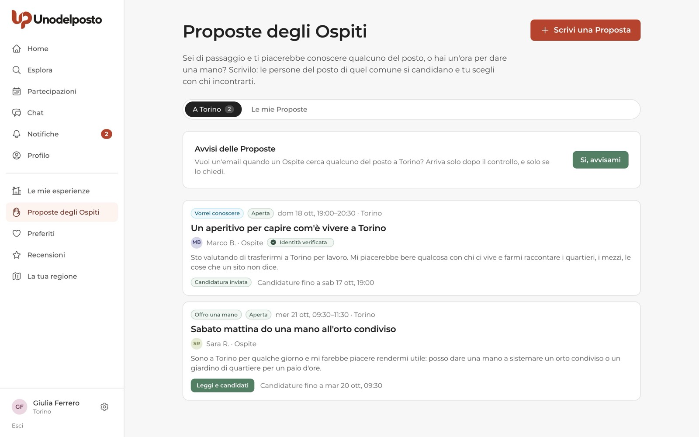
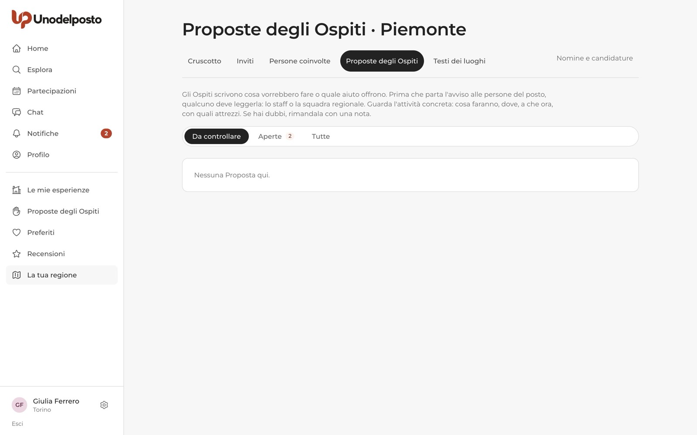
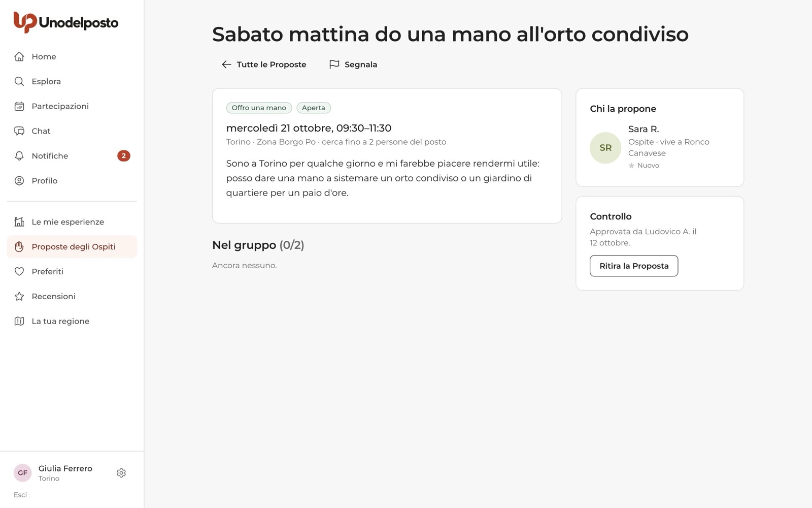

Di solito è chi è del posto a proporre un'esperienza e l'Ospite a candidarsi. Con la Proposta dell'Ospite si fa anche al contrario: sei di passaggio in un comune e scrivi cosa ti piacerebbe fare, quando e dove. Per esempio «mercoledì sera vorrei bere qualcosa con qualcuno del posto e capire come si vive qui», oppure «sabato mattina ho un'ora libera e posso dare una mano all'orto».
Una persona dello staff o della squadra regionale legge la Proposta. Poi le persone del posto di quel comune la vedono e si candidano. Tu scegli con chi incontrarti. Da lì è un incontro come gli altri: chat di gruppo, promemoria, recensioni. E come sempre, senza denaro.
Due tipi
«Vorrei conoscere» per incontrare gente del posto, «Offro una mano» per un aiuto pratico.
Prima un controllo
Nessuna Proposta parte senza che una persona l'abbia letta.
Solo chi è del posto
La vedono e si candidano solo le persone del posto di quel comune. Non è pubblica.
Scegli tu
Da 1 a 6 persone del posto. Al primo sì si apre la chat di gruppo.
Se scrivi una Proposta
Dal modulo alla scelta di chi incontrare.
Dove la trovi
Nel menu laterale c'è la voce Proposte degli Ospiti (dal telefono è l'icona con la mano, in alto). Nella scheda Le mie Proposte trovi quelle che hai scritto; in alto a destra c'è il pulsante Scrivi una Proposta.

Scrivere la Proposta
Serve un account attivo con l'email verificata. Il modulo è su una sola pagina:
- Cosa ti piacerebbe? Scegli Vorrei conoscere (un caffè, una passeggiata, una cena per capire come si vive lì) oppure Offro una mano (un'ora per la legna, l'orto, il giardino, una commissione). Per «Vorrei conoscere» scegli anche che tipo di incontro, tra le categorie della fase pilota.
- Raccontala. Un titolo e il campo «Chi sei e cosa vorresti fare», almeno 80 caratteri: chi sei, perché sei lì, cosa ti piacerebbe. Niente soldi, compensi o scambi.
- Dove e quando. Il comune dove sei di passaggio e la Zona (per esempio «centro storico»): il punto preciso lo decidete poi in chat. Poi Giorno, Dalle e Alle.
- Quante persone del posto al massimo. Da 1 a 6. Sarai tu a scegliere tra chi si candida.
- L'avviso e la casella. Leggi il riquadro «Prima di tutto» e spunta la casella di responsabilità. Poi premi Invia per il controllo.

Ci sono alcuni limiti di tempo e di numero:
- l'incontro deve iniziare tra almeno 48 ore e non oltre 60 giorni: serve tempo per il controllo e per le candidature;
- dura da mezz'ora a 3 ore, nello stesso giorno;
- puoi avere al massimo 3 Proposte aperte (in controllo o ancora da svolgere) e scriverne al massimo 2 al giorno.
L'avviso di responsabilità
Su ogni modulo trovi lo stesso riquadro, «Prima di tutto». Dice in parole semplici che Unodelposto mette in contatto le persone ma non organizza gli incontri: non li segue, non li supervisiona e non li assicura. Chi partecipa lo fa sotto la propria responsabilità. Il controllo riguarda il testo della Proposta, non è una garanzia su persone, luoghi o esito. Per chi dà una mano c'è un invito in più: valuta se l'attività è alla tua portata, usa solo attrezzi che sai usare, fermati se qualcosa ti sembra rischioso. Senza la casella spuntata la Proposta non parte.
Il controllo
Appena la invii, la Proposta è In controllo. La legge una persona dello staff o della squadra regionale. Poi ricevi l'esito:
- Aperta: è approvata. Le persone del posto di quel comune la vedono e possono candidarsi. A chi lo ha chiesto arriva un avviso.
- Da rivedere: non è stata pubblicata. Nella pagina trovi la nota di chi l'ha letta. Puoi eliminarla e scriverne una nuova.
Scegliere chi incontrare
Apri la Proposta da Le mie Proposte con Gestisci. Il riquadro verde ti dice fino a quando le persone del posto possono candidarsi. Nella sezione Candidature da leggere vedi per ognuna il nome, «Del posto, a» con il comune, gli incontri fatti come persona del posto, le recensioni, il segno di fiducia e il messaggio.


- Accetta: la persona entra nel gruppo. Al primo sì si apre la chat di gruppo.
- Non accettare: riceve un messaggio neutro. Il motivo, se lo scrivi, resta solo per te.
Puoi accettare fino all'inizio dell'incontro, anche dopo che le candidature si sono chiuse, finché non riempi i posti. Nella sezione Nel gruppo vedi chi hai già accettato; accanto a ciascuno c'è Togli dal gruppo, con un motivo che verrà comunicato.
Poi è un incontro come gli altri
Nella chat di gruppo decidete il punto preciso. Arrivano i promemoria prima dell'incontro. Dopo, qui sei tu che hai organizzato: nella pagina della Proposta compare Com'è andata?, dove togli la spunta a chi non è venuto e premi Sì, l'incontro c'è stato (oppure No, non si è svolto). Poi vi recensite a vicenda: tu ricevi la recensione come Ospite, le persone del posto come persone del posto.
Annullare la Proposta
In fondo alla colonna di destra trovi Elimina la Proposta se è ancora in controllo o da rivedere, oppure Annulla la Proposta se è già aperta. Se ci sono già persone nel gruppo, devi scrivere il motivo: vengono avvisate e la chat si chiude. Fallo il prima possibile, chi ha accettato si sta organizzando per te.
Se rispondi a una Proposta
Un Ospite di passaggio nel tuo comune cerca qualcuno del posto.
Dove vedi le Proposte
Le Proposte non sono pubbliche: non compaiono nelle ricerche né sulle mappe. Le vedi solo se sei del posto in quel comune. In Proposte degli Ospiti trovi la scheda con il nome del tuo comune (per esempio A Torino) accanto a Le mie Proposte. Ogni Proposta mostra il tipo, lo stato, giorno e orario, chi la propone e fino a quando puoi candidarti.

Ricevere un avviso
L'email arriva solo se la chiedi tu. Hai tre modi per accenderla:
- nella scheda del tuo comune, nel riquadro Avvisi delle Proposte, premi Sì, avvisami (per spegnere: Spegni gli avvisi);
- in Impostazioni, scheda Notifiche, nel riquadro «Proposte degli Ospiti a» il tuo comune, con Accendi o Spegni;
- quando diventi uno del posto, con la casella facoltativa dell'ultima schermata.
L'avviso parte solo dopo il controllo, quindi non ricevi mai Proposte che nessuno ha letto.
Candidarti
- Apri la Proposta. Premi Leggi e candidati e leggi con calma cosa propone l'Ospite.
- Presentati. Nel riquadro «Ti va di incontrare…?» scrivi due righe nel campo Il tuo messaggio.
- Leggi l'avviso. Leggi il riquadro «Prima di tutto» e spunta la casella di responsabilità.
- Invia. Premi Mi candido. Nell'elenco la Proposta mostra Candidatura inviata.
Puoi candidarti fino a 24 ore prima dell'inizio; dopo compare «Le candidature sono chiuse». Alle Proposte non si portano accompagnatori.
Dalla pagina della Proposta vedi lo stato della tua candidatura. Se l'Ospite ti accetta, compare Apri la chat di gruppo. Con Dettagli e ritiro puoi anche ritirarti.
Se controlli le Proposte
Per lo staff di Unodelposto e per referenti e collaboratori regionali della regione.
Ogni Proposta della tua regione arriva In controllo e ti viene segnalata. Da La tua regione apri la scheda Proposte degli Ospiti, che ha tre viste: Da controllare, Aperte e Tutte. Lo staff le trova nel proprio pannello. La decisione si prende sempre dalla pagina della Proposta.

- Leggi l'attività concreta. Cosa faranno, dove, a che ora, con quali attrezzi. Conta quello che succederà davvero, non il titolo.
- Scrivi la nota. Nel riquadro Controllo, campo «Nota (la legge l'Ospite)», da 10 a 1000 caratteri.
- Decidi. Approva apre la Proposta e fa partire l'avviso alle persone del posto che lo hanno chiesto. Da rivedere la rimanda all'Ospite con la tua nota, senza avvisare nessuno.
Una Proposta va decisa in tempo: se le candidature si sarebbero già chiuse, non si può più approvare.

Dopo l'approvazione puoi ancora Ritira la Proposta, con un motivo che leggono l'Ospite e il gruppo. È un annullamento: chi si era candidato viene avvisato e la chat si chiude.
Domande frequenti
Sono del posto a Torino. Posso scrivere una Proposta per Torino?
No. Nel comune dove vivi sei del posto: lì puoi proporre un'esperienza o candidarti alle Proposte degli altri. Puoi scrivere una Proposta per un comune dove sei di passaggio.
Posso offrire aiuto in cambio di vitto o di un piccolo compenso?
No. Le Proposte sono gratuite come tutto il resto: niente soldi, compensi o scambi. L'aiuto è un'ora del tuo tempo, regalata.
Perché non vedo la scheda con il nome del mio comune?
La vedi solo se sei del posto e hai indicato il tuo comune nel profilo. Altrimenti vedi solo «Le mie Proposte».
Ho scritto la Proposta ma nessuno si candida. Perché?
Può darsi che sia ancora in controllo, oppure che nel comune ci siano poche persone del posto con gli avvisi accesi. Le candidature restano aperte fino a 24 ore prima dell'incontro.
La mia Proposta è «Da rivedere». Posso correggerla?
Leggi la nota di chi l'ha controllata, poi elimina la Proposta e scrivine una nuova tenendo conto della nota.
Il controllo vuol dire che l'incontro è sicuro?
No. Il controllo riguarda il testo della Proposta e i limiti della piattaforma. Incontratevi in un luogo pubblico, usate la chat di gruppo e, se qualcosa non ti torna, segnalalo.
Ti serve su carta?
La stessa guida in PDF, da stampare o inviare.